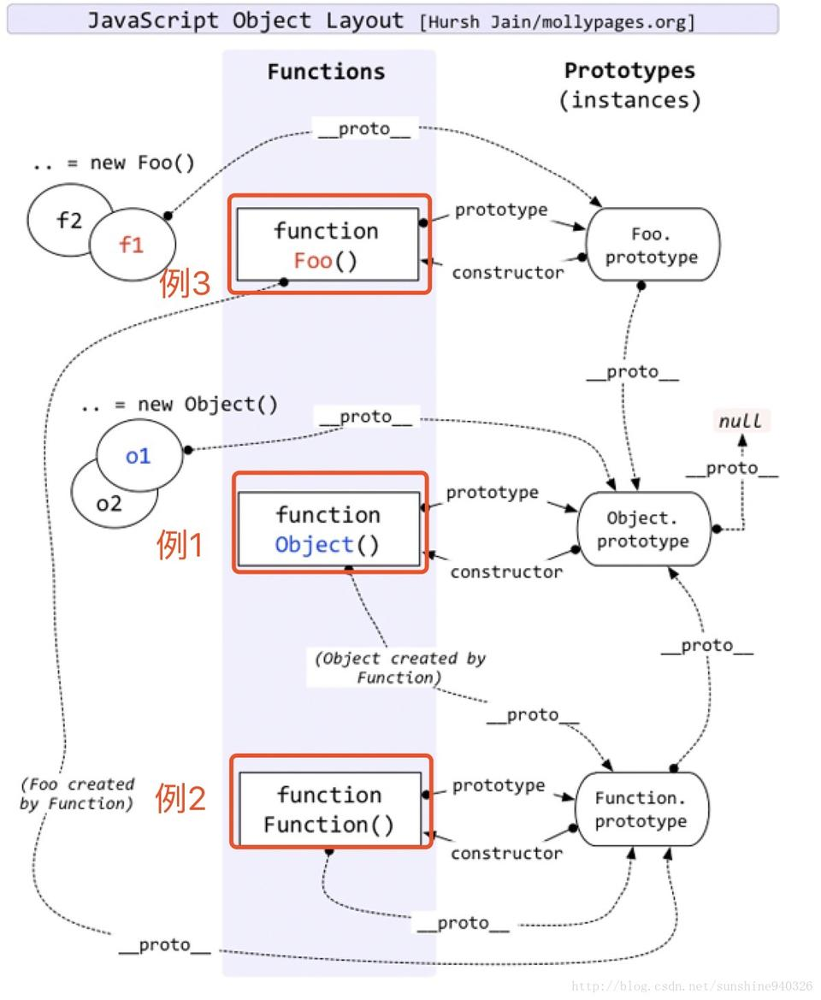

在javaScript中，经常会说到原型（prototype）和原型链（prototype chain）。我曾经以为我完全理解了，但是后来总是会发现不同的地方，这次进行一次系统的整理。
看一下权威指南中的说明
每一个javaScript对象（null除外）都和另一个对象相关联。“另一个”对象就是我们熟知的原型，每一个对象都从原型继承属性。
如果是通过关键字new和构造函数(constructor)调用创建的对象，比如let x = new Date()，此时x的原型就是constructor的prototype属性。
如果是通过对象直接量创建的对象的时候，比如let y = {}。此时的y会和Object.prototype相关联。
如果是通过Object.create()创建的对象，比如let z = Object.create(obj)。此时z的原型就是它的第一个参数obj（也可以是null）。
let x = new Date(),
y1 = {},
y2 =[],
obj = {a:1},
z = Object.create(obj);
Object.getPrototypeOf(x) === Date.prototype // true
Object.getPrototypeOf(y1) === Object.prototype // true
// 注意这里是数组
Object.getPrototypeOf(y2) === Array.prototype // true
Object.getPrototypeOf(z) === obj // true
可以在浏览器调试工具中打印下Object.prototype究竟是什么样，会看到很多常见的方法。
上面都是内置构造函数，自定义的函数也是一样
function Test(){
console.log('constructor Test');
}
let test = new Test();
Object.getPrototypeOf(test) === Test.prototype // true实例在被创建的时候，就已和自己的原型相关联。原型指向constructor的prototype，当然也可以是指定的对象。那么如此重要的一个特性是做什么的呢？简单来说，是用来实现继承的。
思考一个简单的问题，定义一个对象let x = {a:1}。x中没有定义任何方法，但是却可以使用一些方法（比如：toString），那么这些方法来自哪里呢？
let x = {a:1},
y = new String('123');
// toString继承自Object.prototype
x.toSting() // "[object Object]"
// split继承自String.prototype
y.split('') // ["1", "2", "3"]实例对象的原型中会有公共的方法，每个实例都可以访问到，这样无需再重复实现，也就是继承。所以JavaScript中的继承，不是通过复制而来的，而是通过原型继承的，而访问的过程，就是所谓的“原型链”了。
我们可以把需要实例继承的方法定义在它的原型上。
function Test(){
}
Test.prototype.sayHi = function(){
console.log('Hi world!')
}
let test1 = new Test();
let test2 = new Test();
// 实例使用原型上的方法
test1.sayHi() // 'Hi world!'
test2.sayHi() // 'Hi world!'每个实例对象（
object）都有一个私有属性（可称之为__proto__）指向它的构造函数的原型对象（prototype）。该原型对象也有一个自己的原型对象(__proto__) ，层层向上直到一个对象的原型对象为null。根据定义，null没有原型，并作为这个原型链中的最后一个环节。
注意： __proto__是JavaScript 的非标准属性，但许多浏览器都已实现。
以上面的对象为例进行分析：对x={a:1}这个对象调用toString方法，在x对象中没有找到此方法，就会去x.__proto__指向的原型对象（也就是Object.prototype对象）中找，在Object.prototype中找到了toString，就调用了。如果调用x.aa()方法，x自身没有，x.__proto__中也没有，再往上一层x.__proto__.__proto__发现是null（Object.prototype.__proto__ === null）了，在自身和原型链中都没有找到，就会报错了。
实例对象在创建的时候就和原型对象相关联，除了__proto__这个非标准属性外，可以通过以下方法访问原型对象。
Object.getPrototypeOf() 方法返回指定对象的原型（内部[[Prototype]]属性的值）。Object.setPrototypeOf() 方法设置一个指定的对象的原型 ( 即, 内部[[Prototype]]属性）到另一个对象或 null。isPrototypeOf() 方法用于测试一个对象是否存在于另一个对象的原型链上。prototypeObj.isPrototypeOf(object)__proto__ 和 prototype属性要注意区分__proto__和prototype：
__proto__是实例对象的私有属性，指向它的构造函数的prototype属性prototype是构造函数的属性，在调用构造函数创建实例对象时，实例对象通过__proto__和prototype相关联。同样的，prototype对象中会有__proto__，指向它自己的原型，这样一层层链接，直到指向null，形成原型链Function的实例prototype属性，是定义公共方法的地方；prototype中有constructor属性，是指向函数本身。 // Test为构造函数
function Test(){};
// x为Test的实例对象
let x = new Test();
// x的原型链为：x -> Test.prototype -> Object.prototype -> null
x.__proto__ === Test.prototype; // true
x.__proto__.__proto__ === Object.prototype; // true
x.__proto__.__proto__.__proto__ === null; // true
// 构造函数也算是Function的实例
// Test的原型链为：Test -> Function.prototype -> Object.prototype -> null
Test.__proto__ === Function.prototype // true
Test.__proto__.__proto__ === Object.prototype // true
// 内置的构造函数也都算是Function的实例
Array.__proto__ === Function.prototype // true
Date.__proto__ === Function.prototype // true
Function.__proto__ === Function.prototype // true
Object.__proto__ === Function.prototype // true
//constructor
Test.prototype.constructor === Test // true
x.constructor === Test // true 注意，这里用的x原型（Test.prototype中的属性）最后放一张网图来总结下
